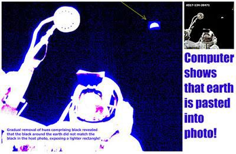
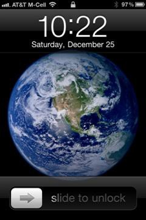

SAILING TO JAMBŪDVĪPA
The Māyāpur Vedic Planetarium and
the Flat Earth According to Śrīmad-Bhāgavatam
By Māyeśvara dāsa -- Part 2 --
(2.0) The Rediscovery of Jambūdvīpa
Despite the impediments mentioned earlier about the difficulties in perceiving and accessing the inhabitated land areas beyond Earth, I would venture a prediction based on the statements contained in the Śrī Caitanya-caritāmṛta, that the saṅkīrtana movement will spread all over the universe, and that a connection with Jambūdvīpa will be re-established. In the Śrī Caitanya-caritāmṛta, it is stated by Śrīla Kṛṣṇadāsa Kavirāja Gosvāmī the author of the book:
nagare nagare bhrame kīrtana kariyā
bhāsāila tri-bhuvana prema-bhakti diyā
The saṅkīrtana movement went on from one part of the town to another, as the Lord wandered everywhere performing kīrtana. In this way He inundated the whole world by distributing love of Godhead. (Śrī Caitanya- caritāmṛta, Ādi-līlā, 13.32)
Here it mentions that the three worlds (tri-bhuvana), meaning the upper, lower and middle planetary systems of the universe will all be inundated by prema-bhakti (love of Godhead).
Śrī Caitanya Mahāprabhu and his associates performing saṅkīrtana (congregational chanting of the names of God) in the villages of West Bengal.
In his commentary to the above verse, Śrīla Prabhupāda makes an incredible prediction:
One may raise the question how all three worlds became inundated with love of Kṛṣṇa, since Caitanya Mahāprabhu performed kīrtana only in the Navadvīpa area. The answer is that Lord Śrī Caitanya Mahāprabhu is Kṛṣṇa Himself. The entire cosmic manifestation results from the Lord's first setting it in motion. Similarly, since the saṅkīrtana movement was first set in motion five hundred years ago by Śrī Caitanya Mahāprabhu's desire that it spread all over the universe, the Kṛṣṇa consciousness movement, in continuity of that same motion, is now spreading all over the world, and in this way it will gradually spread all over the universe. With the spread of the Kṛṣṇa consciousness movement, everyone will merge in an ocean of love of Kṛṣṇa. (Śrī Caitanya- caritāmṛta Ādi- līlā 13.32)
We should bear in mind that before Śrīla Prabhupāda's epic journey to the Western countries in 1965 to teach Krishna consciousness, many Gauḍīya Vaiṣṇavas born in Bengal, India believed that Śrī Caitanya Mahāprabhu's prophecy that the Hare Krishna mantra would be sounded in every town and village, referred to only the towns and villages of India. It was Śrīla Prabhupāda, following the direction of his guru, Śrīla Bhaktisiddānta Sarasvatī Öhākura who stressed that every town and village meant every town and village in the world (and ultimately in the universe). Śrīla Prabhupāda subsequently made the 500 year old prophecy of Śrī Caitanya Mahāprabhu's a reality by leaving India in 1965 and propagating the Hare Krishna mantra throughout the world. Śrīla Prabhupāda also taught that the Hare Krishna mantra would be similarly propagated among all the living entities in the Universe. This is not a small vision. To help fulfil that vision, we should at least be aware of where we are in the universe, and that we have other human neighbours living in other tracts of land that are yet to be discovered by us. This discovery will depend solely on a person's level of spiritual qualification, and not by means of brute force such as that exercised by the Europeans when they first 'discovered' America. There is absolutely no possibility of entering Jambūdvīpa by material qualification or machines (without higher permission). In the Śrī Caitanya-caritāmṛta it is stated:
Śrī Kṛṣṇa Caitanya Mahāprabhu and His associates of the Pañca-tattva distributed the holy name of the Lord to invoke love of Godhead throughout the universe, and thus the entire universe was thankful. (Śrī Caitanya- caritāmṛta, Ādi-līlā, 7.163)
In his commentary on this verse Śrīla Prabhupāda writes:
Here it is said that Lord Caitanya made the entire universe thankful to Him for propagating the saṅkīrtana movement with His associates. Lord Caitanya Mahāprabhu has already sanctified the entire universe by His presence five hundred years ago, and therefore anyone who attempts to serve Śrī Caitanya Mahāprabhu sincerely by following in His footsteps and following the instructions of the ācāryas will successfully be able to preach the holy names of the Hare Kṛṣṇa mahā-mantra all over the universe. (Śrī Caitanya-caritāmṛta, Ādi-līlā, 7.163)
From this and similar predictions made in the Śrī Caitanya-caritāmṛta, it is not unreasonable to imagine, that as the saṅkīrtana movement increases throughout the Earth, renewed contact with the living entities on Jambūdvīpa, Bhū-maṇḍala, and indeed all parts of the universe could well be re-established. Indeed, it is stated in the Śrī Caitanya-caritāmṛta that living entities were coming from Jambūdvīpa to see Śrī Caitanya Mahāprabhu in India only 500 years ago.
People from all over the universe, including the seven islands, the nine khaṇḍas, the planets of the demigods, Gandharvaloka and Kinnaraloka, would go there in the forms of human beings. (Śrī Caitanya- caritāmṛta, Antya-līlā, 2.10)
Residents of Jambūdvīpa and other parts of the universe would visit Śrī Caitanya Mahāprabhu at his place of residence in Jagannath Purī, India.
In the above verse from Śrī Caitanya- caritāmṛta, (Antya-līlā, 2.10) it mentions how people were coming not only from Jambūdvīpa, but also from the other dvīpas or islands that form the other areas of Bhū-maṇḍala. Indeed they were coming in disguise as ordinary human beings from all over the universe. Here we learn that the residents of Jambūdvīpa were visiting Śrī Caitanya Mahāprabhu in Jagannath Purī (a pilgrimage place on the West coast of East India). These events happened only 500 years ago. The residents of Jambūdvīpa mingled in disguise among the ordinary humans. It seems the residents of Jambūdvīpa having superior mystic ability can travel back and forth from Jambūdvīpa to Bhārata-varṣa, but the residents of Bhārata-varṣa are curtailed from going back and forth to Jambūdvīpa. There is no reason why advanced devotees of God will not have similar encounters; indeed that seems to be the indication from Śrīla Prabhupāda's purports on the subject of the saṅkīrtana movement spreading throughout the universe. As stated in the Śrī Caitanya- caritāmṛta:
Within the universe the Lord is situated in different spiritual manifestations. These are situated on seven islands in nine sections. Thus Their pastimes are going on. (Śrī Caitanya- caritāmṛta, Madhya- līlā, 20.218)
The seven islands mentioned here are the huge tracts of line that stretch across the Bhū- maṇḍala with Jambūdvīpa in the center. In Śrīla Prabhupāda's purport to this verse, we learn that the activities of Śrī Caitanya Mahāprabhu are going on in these seven islands of Bhū-maṇḍala; and within Jambūdvīpa itself, the Lord's pastimes are also taking place in each of the nine varṣas including Bhārata-varṣa. The point of this is to inform everyone not only of the existence of life, and notably other human life, in other parts of the universe, but that all of the universe is being liberated from material illusion by the mercy of Krishna in His form as Śrī Caitanya Mahāprabhu, the golden coloured avatar who propagates love of God throughout the Universe:
The Lord is situated in all the universes in different forms just to please His devotees. Thus the Lord destroys irreligious principles and establishes religious principles. (Śrī Caitanya-caritāmṛta, Madhya- līlā, 20.219)
Moreover those who are spiritually qualified will be eligible to visit, interact, and teach Krishna consciousness in these places. As stated in the following verses from Śrī Caitanya-caritāmṛta:
Thus by direct meetings, Śrī Caitanya Mahāprabhu delivered the three worlds. Some people, however, were entangled in material activities and could not go.
To deliver people in regions throughout the universe who could not meet Him, Śrī Caitanya Mahāprabhu personally entered the bodies of pure devotees.
Thus He empowered living beings [His pure devotees] by manifesting in them so much of His own devotion that people in all other countries became devotees by seeing them.
In this way Śrī Caitanya Mahāprabhu delivered the entire three worlds, not only by His personal presence but also by empowering others. I shall briefly describe how He empowered a living being in Bengal. (Śrī Caitanya- caritāmṛta, Antya- līlā, 2.12-15)
Here it is specifically mentioned that the Lord engaged personally, and empowered His pure devotees to deliver the three worlds (tri-bhuvana), that is to liberate the conditioned souls who are entangled in the cycle of repeated birth and death. The Vedas describe how great sages like Śrī Nārada Muni can freely traverse the universe without the need of machines. These great sages travel from place to place and teach other conditioned souls about devotional service to Krishna (bhakti-yoga). By the arrangement of the Lord, empowered devotees of the Lord also take birth throughout the universe and propagate bhakti-yoga or loving devotional service to Krishna to the people of those places. By applying the practices of bhakti-yoga, the conditioned souls can awaken their eternal love for Krishna and thereby gain release from the clutches of māyā that keeps them bound in the cycle of repeated birth within the material world.
For practitioners of bhakti-yoga the goal of life is not simply in discovering these new areas of Earth, or indeed any part of the universe; but rather, to return home back to Godhead and to persuade others to do likewise. The idea is to ultimately leave the material world behind altogether. Anything physical is subject to destruction and is therefore a cause of suffering to the eternal living entity who seeks permanent relationships in a permanent and perfect environment. Only by returning to the complete and perfect spiritual landscape can souls be truly happy. Nevertheless, an appreciation for the shape, measurement, beauty, and varied nature of Krishna's fantastic creation should be present in the devotee of Krishna. Krishna Himself wishes us to know these details, and has provided the relevant information in the various Vedic texts. We can also be happy for our sojourn here in the material world by following the direction of Krishna.
Śrī Caitanya Mahāprabhu's saṅkīrtana movement will bring together people from all over the universe. Just as cities such as London and New York are populated by people from every diverse nation in the world, so the Earth will again be populated by people from diverse parts of the Bhū-maṇḍala and beyond. Such was the situation only 5,000 years ago and if the predictions of Śrī Caitanya- caritāmṛta are correct, it will appear so again in the immediate future.
(2.1) Tamāla Kṛṣṇa Goswami and the Flat Earth
In a conversation with Śrīla Prabhupāda in 1977, his most senior disciple Tamāla Kṛṣṇa Goswami who was helping to work on the research for the Vedic Planetarium shows his clear comprehension of what Śrīmad-Bhāgavatam is actually describing as Earth's shape:
Tamāla Kṛṣṇa: Look at the earth. Now, this is a real question that we still have to answer. They picture the earth round, and we say, no. Bhū-maṇḍala is like a lotus, like this, and the earth is only one part of one island in Bhū- maṇḍala, and it's not, you know, it's not round(?). It doesn't look like that. And all the pictures they take of the earth when they go up in their satellites show round. And we're going to tell them that it's not. This is a very tricky question. In other words, if this is the picture of the world, like this, and we say that... If we take an airplane from here, from Los Angeles. Now, supposing we go to India, which is here. So there's two ways to go. One way, you can go like this, and the other way, you can go like that. But if the earth is not a round globe, then how is it sometimes people go from Los Angeles via Hawaii to Japan and then India? So we can't figure this out. We have experience, those of us who have flown, that actually the plane went from Los Angeles to Hawaii to Tokyo to Hong Kong and then to India. So it doesn't work out in our maps so far, right? We can't figure it out. This thing has to be very complete in its answers. Otherwise everyone will laugh at us. We can't leave any loopholes.
Prabhupāda: So are you thinking on this?
Bhakti-prema: In the Śrīmad-Bhāgavatam... According to Śrīmad-Bhāgavatam, it is (indistinct).
Prabhupāda: Find out from our side, according to Bhāgavatam. (Bhū-maṇḍala Diagram Discussion, July 2 1977, Vṛndāvana)
Here Tamāla Kṛṣṇa Goswami correctly apprehends and agrees with the Śrīmad- Bhāgavatam's description of Earth as being part of the island of Bhū-maṇḍala, 'not round' as depicted by photos and images from outer space. Here we also get a sense of Tamāla Kṛṣṇa Goswami's frustration in trying to come up with an explanation for the disparity. He takes up the same question again a month later:
Tamala Kṛṣṇa: ...is flying in an airplane from Los Angeles to India via Hawaii, but in the picture that we have drawn, there is no way you can go from Los Angeles to India via Hawaii. If you go this direction, from Los Angeles, say, this way, you don't come to India. India's over here according to our description. Yet when they take a flight, they say, "We go around the earth." But we say, "You cannot go around the earth." So far, our understanding... So far— unless we have not completely understood yet—it is like a lotus, Jambūdvīpa, and the whole Bhū-maṇḍala is like a lotus. So how do... You cannot fly around Bhāratavarṣa, or earth. Yet every day the whole science of aeronautics, of flying, is based upon the fact that they're flying around different places of the earth. And everyone who sees this, that, our description, is going to ask this question. It's a very important question to answer, and Bhakti- prema has not yet answered it. None of us can. We are avoiding it at this point until we get further information. There must be an answer, but we have not yet been able to give the answer. I have absolute faith in these, the Vedic description. I am completely convinced. I just know that I have not understood perfectly yet. Therefore the answer's not apparent. But it's definitely a question that they will raise. (Conversations with Śrīla Prabhupāda, June 30, 1977, Vṛndāvana)
So the question that Tamāla Kṛṣṇa Goswami poses here is that if the Earth is flat as Śrīmad-Bhāgavatam describes, how is it that we have the experience of flying around the world, and how do we explain photographs and video of Earth from outer space which looks round? Be conscious here that Tamāla Kṛṣṇa Goswami is in no way objecting to the Śrīmad-Bhāgavatam's description of Earth; he clearly expresses to Śrīla Prabhupāda his 'absolute faith' in the Śrīmad-Bhāgavatam's description; yet he admits to being stumped for an explanation. The answer to his inquiry is actually quite simple: (1) one can still fly around the world on a flat surface. (2) The pictures and films of Earth from outer space are fake; they are part of the same hoax that has been perpetrated since the first faked moon-landing in 1969. We shall look now at both these issues.
Firstly, an explanation of how one can circumnavigate a flat Earth is very simple. In a flat Earth conception, one can still actually be sailing or flying around in a circular motion from one continent to another, thinking one is circling a globe whilst actually just going around a limited flat surface area like a bull moving in a circle around a grinding stone. Imagine if America, Europe, Africa, Australia, etc., were laid out flat on a big round-about. One could go around the round-about west to east or east to west. One may think that the complete round-about surface is the totality of area to be explored, when in actual fact, there are different exits or roads leading away from the round-about to vastly greater areas along the same plane. The image below shows an east-west circumnavigation on a flat Earth map:
Flying around the world from west to east or east to west on a flat Earth would thus look like this:
As Śrīla Prabhupāda explains in the conversation following below (section 2.5), we are at present restricted from seeing and going to other places due to being conditioned and controlled by higher forces. East-west circumnavigation is therefore possible on a flat Earth model, but circumnavigation from north to south is impossible both on a flat Earth model and a globe model which explains why there are no recorded missions of north-south circumnavigation. Extravagant claims to north-south circumnavigation usually end up looking something like this, with a pilot flying north over part of the Arctic, then heading south to the Antarctica until he is forced to turn east or west before heading back north again:
From the Śrīmad-Bhāgavatam's description of Bhārata-varṣa's relation to Jambūdvīpa, it cannot be that someone has flown north to south, then went under the globe and flown back north on the other side. Bhārata-varṣa is resting on an expanded flat surface that stretches for billions of miles, and there is no question of looping up and over, or down and under. What one can do, is sail or fly south, turn around whatever land is there, then head back north again. It appears that one is going around a circle but actually one is just going north to south on a flat surface. Because of the image of the globe in our head, we think going north means going up vertically and ascending the top of the globe; and that going south means descending and around the bottom of the ball. But try thinking instead of walking from the north of a city to the south, turning around a landmark and heading back north again by a different route. On a horizontal plane one can still go in a northerly direction and turn back in a southerly direction. Indeed, one can walk to the north or south, east or west of a particular city, or a particular country. On a flat Earth concept, theoretically one can keep flying or sailing for hundreds of thousands of miles. In fact the greater Bhū-maṇḍala goes in all directions, north, south, east, and west, along a flat plane for two billion miles in each direction until one comes to the shell of the universe. As Śrīla Prabhupāda explains in the conversation below (section 2.5), the range of east and west is actually greater than we think, but at the moment we are restricted from going there. There is, of course, an up and down in the universe, but on the Bhū-maṇḍala at least, the directions north, south, east, and west are on a horizontal plane. Thus heading in a northerly direction from the south of India, one eventually comes to Jambūdvīpa, as was the case when the Pāṇḍavas marched into Jambūdvīpa from Indraprastha in India 5,000 years ago. How this was accomplished, and by what route, I do not precisely know; but as suggested above in section 2.0, I predict—based on statements in the Śrī Caitanya-caritāmṛta—that access to this region will be available again at some point in the future.
Upon researching evidence for the flat Earth, and the faking of images of the globe from outer space, it quickly becomes obvious that we are living in an artificially manipulated reality of stupendous proportions, and one must be prepared for a shock to the system. To his credit, Tamāla Kṛṣṇa Goswami, very sincerely expressed to Śrīla Prabhupāda his 'absolute faith' in the Śrīmad-Bhāgavatam's description of Earth's depiction, but admitted that he was unable to explain such things as flying around the world, or the existence of photographs that show a round Earth floating in space. Tamāla Kṛṣṇa Goswami integrity, and faith in Śrīmad-Bhāgavatam's description of Earth, is displayed by his willingness to wait for a suitable explanation that was consistent with the Śrīmad- Bhāgavatam's description, not that he favoured continuing to present the Earth as globe- shaped Earth simply because it appears to match our present experience of reality. In other words, he was willing to challenge that very model of reality which is being presented to us from non-Vedic sources:
Tamāla Kṛṣṇa: Our question was mostly coming out of how to draw what the Śrīmad-Bhāgavatam is saying. We're not supporting any kind of mundane argument, nor do we have any doubt in Bhāgavatam. We're simply trying to understand the Bhāgavatam…
Prabhupāda: Bhāgavata is there. You try to understand.
Tamāla Kṛṣṇa: We're not siding with the preconceptions that we had before. We'll throw them away. We're trying to accept the Bhāgavatam. Everything has to be according to the Bhāgavatam. (Conversation about Bhu-mandala, July 5, 1977, Vrindavana)
In this same spirit, I think the followers of Śrīla Prabhupāda should be courteous and open to listening to the many quite fascinating arguments in favour of the flat Earth,
which at least are consistent with what Śrīmad-Bhāgavatam describes. These arguments, of course, would have to be adjusted (were necessary) in line with the complete Vedic understanding of things.
Listening to the many arguments in favour of the flat Earth, it may come as a great shock to discover the extent of how our present experience of reality has been manipulated by a non-spiritual agenda. We should bear in mind that the Sound Incarnation of Godhead or Hare Krishna mantra has manifested at this time precisely because the world is now being controlled and manipulated by asuras (the demoniac).
Whenever and wherever there is a decline in religious practice, O descendant of Bharata, and a predominant rise of irreligion—at that time I descend Myself.
To deliver the pious and to annihilate the miscreants, as well as to reestablish the principles of religion, I Myself appear, millennium after millennium. (Bhagavad-gītā As It Is, 4.7-8)
In a lecture given in Los Angeles in 1974, Śrīla Prabhupāda explained the present situation in the world:
So Kṛṣṇa comes here, as it is stated in the Bhagavad-gītā, paritrāṇāya sādhūnāṁ vināśāya ca duṣkṛtām [Bg. 4.8]. So Kṛṣṇa appeared to kill so many demons. Whenever there will be demons, Kṛṣṇa will come. At the present moment, now, the world is full of demons. Therefore Kṛṣṇa has come in the form of Hare Kṛṣṇa.
Devotees: Hare Kṛṣṇa.
Prabhupāda: That is Kṛṣṇa avatāra. Kali-yuge nāma-rūpe avatāra. So don't think that Kṛṣṇa, this vibration Kṛṣṇa, is different from that Kṛṣṇa. The same Kṛṣṇa. The same Kṛṣṇa. (Srimad Bhagavatam 1.16.23, Los Angeles, July 13 1974)
This was a theme that Śrīla Prabhupāda repeated throughout his purports and lectures, namely, that Lord Krishna is now incarnated in the world in the form of transcendental sound vibration or Hare Krishna mantra. Krishna appears whenever the demoniac or satanic influence becomes too great:
Kṛṣṇa appears in this world for two purposes, paritrāṇāya sādhūnāṁ vināśāya ca duṣkṛtām: [Bg. 4.8] to protect the innocent, religious devotees of the Lord and to annihilate all the uneducated, uncultured asuras, who unnecessarily bark like dogs and fight among themselves for political power. It is said, kali-kāle nāma-rūpe kṛṣṇa avatāra. The Hare Kṛṣṇa movement is also an incarnation of Kṛṣṇa in the form of the holy name (nāma-rūpe). Every one of us who is actually afraid of the asuric rulers and politicians must welcome this incarnation of Kṛṣṇa: Hare Kṛṣṇa, Hare Kṛṣṇa, Kṛṣṇa Kṛṣṇa, Hare Hare/ Hare Rāma, Hare Rāma, Rāma Rāma, Hare Hare. Then we will surely be protected from the harassment of asuric rulers. At the present moment these rulers are so powerful that by hook or by crook they capture the highest posts in government and harass countless numbers of people on the plea of national security or some emergency. Then again, one asura defeats another asura, but the public continues to suffer. Therefore the entire world is in a precarious condition, and the only hope is this Hare Kṛṣṇa movement. Lord Nṛsiṁhadeva appeared when Prahlāda was excessively harassed by his asuric father. Because of such asuric fathers—that is, the ruling politicians—it is very difficult to press forward the Hare Kṛṣṇa movement, but because Kṛṣṇa has now appeared in His holy name through this movement, we can hope that these asuric fathers will be annihilated and the kingdom of God established all over the world. The entire world is now full of many asuras in the guise of politicians, gurus, sādhus, yogīs and incarnations, and they are misleading the general public away from Kṛṣṇa consciousness, which can offer true benefit to human society. (SB 10.3.21)
The level of deception and illusion employed by the asuras is not to be underestimated. The idea placed in our heads that we are floating in space on a globe, not on the flat Earth, certainly requires awesome powers of manipulation and propaganda. However, once one begins to look at the trickery involved in this deception, the whole show looks so comical. As light dissipates darkness, the Holy name dissipates illusion by manifesting things as they are. The Vedic planetarium must also be seen as part of Krishna's mission to dispel illusion and manifest reality. Earth in Krishna conscious reality is part of Jambūdvīpa; it rests on the horizontal plane of Bhū-maṇḍala wherein billions of other advanced humans reside. It is not a globe-shaped ball rotating in lifeless space.
(2.2) Faking the Images of the Earth
Now to return to Tamāla Kṛṣṇa Goswami's second puzzlement from section 2.1: the images of a round Earth from outer space. Tamāla Kṛṣṇa Goswami had many times heard Śrīla Prabhupāda denounce the bogus moon-landing, but like all of us, he probably never made the connection between the fake moon-landing and the faked first images of the Earth from the so-called moon-landing. The idea of the round Earth had already been so engraved into the mind that it seemed impossible to dispute the Earth's image, even when the first 'photographic evidence' of Earth from outer space came from an obviously faked moon-landing that never set foot out of a television studio.
When one begins to closely study the so-called images of Earth from outer space, they are very much on a par with the so-called pictures of man on the moon. In other words, the authenticity of these images of man on the moon are highly questionable; and having been scrutinized, dissected, and analysed, by various parties over the last fifty years, one finds overwhelming vindication in Śrīla Prabhupāda's claim that the whole thing was a hoax:
Prabhupāda: And they are going to moon. They are going nowhere, simply taking laboratory photo, studio photo, and cheating. Why this cheating can go on? You do not know. That's all. (June 28, 1977, Vṛndāvana)
A complete expose of the moon-landing hoax would take a book in itself to explore all the details of the conspiracy. We will mention here just a few points. In a three minute video posted on Youtube called Secret NASA, Real Footage one can see an example of the films sets in which a rehearsal for the moon land landing was enacted. The link to this video is:
https://www.youtube.com/watch?v=kFAZoVGxqY4
At 1.24 minutes, one can see Neil Armstrong descend from the space craft unto the 'moon' only to have a studio light crash in upon him. People then appear on the set to make the necessary adjustments (see pictures below). An almost exact scene of Neil Armstrong descending the ladder was later released as the official version of the first moon landing wherein Armstrong spoke the following famous words: “One small step for man, one giant leap for mankind.” In the 'official' NASA footage one can see Neil Armstrong from the exact same camera angle, descending the ladder of the space craft onto the so-called 'moon' surface; only this time no hitches appeared on the stage to give the game away:
Now we may think the first video is some kind of joke, and the second one is really what happened; but how would you know if the official version is not also a joke? Two almost identical scenes depict Neil Armstrong stepping onto the moon; one was obviously filmed in a studio, while the other is to be accepted as the authentic historical event. But was it an actual historical event, or just another scene from the special effects department of NASA? The last fifty years has seen literally thousands of books and documentaries exposing the moon hoax. Śrīla Prabhupāda was perhaps the first one to denounce it as such:
Tamāla Kṛṣṇa: What about these pictures we have seen on the television showing them jumping on the moon?
Prabhupāda: That you can make in laboratory. That is not very difficult. Tamāla Kṛṣṇa: Colossal hoax…
Candanācārya: How are they able to perpetuate such an enormous hoax? Prabhupāda: Enormous hoax for the fools, not for the intelligent persons. Hari-śauri: They never fooled you, Śrīla Prabhupāda.
Prabhupāda: Huh?
Hari-śauri: They never fooled you. (Prabhupāda laughs)
Candanācārya: That means that some people must know the actual truth about the hoax in the American system, so if we can find them...
Prabhupāda: So you are knowing that. State it. (Morning walk, June 4 1976, Los Angeles)
Moon sets at NASA's 'training center' in Langley Space Center, Virginnia.
A further question may arise: OK NASA's claims to have gone to the moon may be false, but what about images of the Earth from the space agencies of other countries such as Russia and China. To this proposal Śrīla Prabhupāda was equally dismissive:
Prabhupāda: So since 1955 even. So twenty years, what they have done? Devotee: Spent billions of dollars.
Prabhupāda: Yes, simply they have brought little dust, that's all. Madhudviṣa: Now they have found that that same dust is here on the earth.
Prabhupāda: Yes. Simply propaganda. They are not going. Now the Russian scientist and American scientist are combined. Because both of them thieves, so one thief is asking, “Don't expose me. I will not expose you, so that our business will go on.” This is the way. “Let us combine together and cheat these rascals, and otherwise, if you expose me, then I will expose you. Then our business will stop.”
Devotee: They are cooperating.
Prabhupāda: Cooperating. Thief, thief's cooperation. (Morning Walk, May 1975, Melbourne, Australia.)
Below is the famous image of the Earth globe supposedly photographed from the moon's surface. The photograph is called Earthrise and is posted on NASA's official website:
It begs the question, if as Śrīla Prabhupāda claimed, the Apollo moon landing was a hoax, then do we actually have authentic photographic evidence that the Earth is a globe as they depict it? The documentary by Bart Sibrel called A Funny Thing Happened on the Way to the Moon actually shows actual footage of the Apollo astronauts faking the first Earth shots supposedly thousands of miles on their way to the moon, when in actual fact they were only a few miles above the Earth. You can see this starting at 32.00 minutes into the video posted below:
https://www.youtube.com/watch?v=xciCJfbTvE4
Eric Dubay comments on the video footage as as follows:
In the documentary “A Funny Thing Happened on the Way to the Moon,” you can watch official leaked NASA footage showing Apollo 11 astronauts Buzz Aldrin, Neil Armstrong and Michael Collins, for almost an hour, using transparencies and camera-tricks to fake shots of a round Earth! They communicate over audio with control in Houston about how to accurately stage the shot, and someone keeps prompting them on how to effectively manipulate the camera to achieve the desired effect. First, they blacked out all the windows except for a downward facing circular one, which they aimed the camera towards from several feet away. This created the illusion of a ball-shaped Earth surrounded by the blackness of space, when in fact it was simply a round window in their dark cabin. Neil Armstrong claimed at this point to be 130,000 miles from Earth, half-way to the Moon, but when camera-tricks were finished the viewer could see for themselves the astro-nots were not more than a couple dozen miles above the Earth's surface, likely flying in a high-altitude plane!
Again from Eric Dubay's 200 Proofs Earth is Not a Spinning Ball:
Professional photo-analysts have dissected several NASA images of the ball-Earth and found undeniable proof of computer editing. For example, images of the Earth allegedly taken from the Moon have proven to be copied and pasted in, as evidenced by rectangular cuts found in the black background around the “Earth” by adjusting brightness and contrast levels. If they were truly on the Moon and Earth was truly a ball, there would be no need to fake such pictures.

Once NASA had committed to televising their triumphant so-called journey to the moon, and having pictures of Earth as 'evidence,' they have been subsequently committed to propagating the image of a globe-shaped Earth. There are, in fact, very few images of the Earth from outer space, and the same images seem to keep being regurgitated. One would expect after fifty years in outer-space, and with claims of thousands of satellites orbiting the Earth, that we would have thousands upon thousands of images of Earth, and thousands of videos of Earth rotating in space. Not so! Those few that are provided by NASA are routinely exposed as fraudulent, and the rest are admitted to be composites and computer generated images (CGI'S). Again from Eric Dubay's 200 Proofs Earth is Not a Spinning Ball:
When NASA's images of the ball-Earth are compared with one another the coloration of the land/oceans and relative size of the continents are consistently so drastically different from one another as to prove beyond any reasonable doubt that the pictures are all fake.
People claim Google Earth somehow proves the ball model without realizing that Google Earth is simply a composite program of images taken from high-altitude planes and street-level car-cameras superimposed onto a CGI model of a ball Earth. The same could be just as easily modelled onto a square Earth or any other shape and therefore cannot be used as proof of Earth's rotundity.
If you pick any cloud in the sky and watch for several minutes, two things will happen: the clouds will move and they will morph gradually changing shape. In official NASA footage of the spinning ball Earth, such as the “Galileo” time-lapse video however, clouds are constantly shown for 24+ hours at a time and not moving or morphing whatsoever! This is completely impossible, further proof that NASA produces fake CGI videos, and further evidence that Earth is not a spinning ball.
NASA has several alleged photographs of the ball-Earth which show several exact duplicate cloud patterns! The likelihood of having two or three clouds of the exact same shape in the same picture is as likely as finding two or three people with exactly the same fingerprints. In fact it is solid proof that the clouds were copied and pasted in a computer program and that such pictures showing a ball-shaped Earth are fakes.
NASA graphics artists have placed things like faces, dragons, and even the word “SEX” into cloud patterns over their various ball-Earth pictures. Their recent 2015 Pluto pictures even clearly have a picture of Disney's “Pluto” the dog layered into the background. Such blatant fraud goes unnoticed by the hypnotized masses, but provides further proof of the illegitimacy of NASA and their spinning ball planet mythos. (Eric Dubay: 200 Proofs)
In an article entitled NASA's ‚Blue Marble‛ Earth is a Fake posted by Dr. Eowyn on October 6, 2015, the following story behind the blue marble image of so-called Earth is revealed:
When we think of Earth, this iconic image of the “Blue Marble” immediately comes to mind.
We'll call the above image “Blue Marble I”. From Wikipedia:
The Blue Marble is a famous photograph of the Earth, taken on December 7, 1972, by the crew of the Apollo 17 spacecraft, at a distance of about 45,000 kilometers (28,000 miles). It is one of the most iconic, and among the most widely distributed images in human history….
The image is one of the few to show an almost fully illuminated Earth disk (slightly gibbous), as the astronauts had the Sun behind them when they took the image. To the astronauts, Earth had the appearance and size of a glass marble, hence the name.
The photograph was taken about 5 hours and 6 minutes after launch of the Apollo 17 mission, and about 1 hour 54 minutes after the spacecraft left its parking orbit around the Earth, to begin its trajectory to the Moon.
Or maybe that's not the Blue Marble you have in mind. Maybe it's this iconic image of a more vividly-colored Blue Marble which was released by NASA in 2002. Let's call it “Blue Marble II”.
Blue Marble II is so familiar to us in part because it was the default image on the first iPhone.

But some sharp-eyed geeks discovered “anomalies” in Blue Marble II, specifically duplicate clouds, as you can see in a cropped section of Blue Marble II (below):
{kind=link}
The discovery of duplicate clouds has led to accusations that not only is the 2002 image (Blue Marble II) a fake, the original Apollo 17 image (Blue Marble I) was likely a fake as well. That, in turn, has led some to question whether everything NASA did and said was fake. The problem is that, in the years after the first Blue Marble photo was taken by Apollo 17, NASA has released many Blue Marbles, “Blue Marble II” being one of the best known and most popular. As NASA explains about the 2002 “Blue Marble II”:
Metadata
- Data Date: February 8, 2002
- Visualization Date: February 8, 2002
This spectacular “blue marble” image is the most detailed true-color image of the entire Earth to date. Using a collection of satellite-based observations, scientists and visualizers stitched together months of observations of the land surface, oceans, sea ice, and clouds into a seamless, true-color mosaic of every square kilometer (.386 square mile) of our planet. These images are freely available to educators, scientists, museums, and the public.
Much of the information contained in this image came from a single remote-sensing device-NASA‖s Moderate Resolution Imaging Spectroradiometer, or MODIS. Flying over 700 km above the Earth on board the Terra satellite, MODIS provides an integrated tool for observing a variety of terrestrial, oceanic, and atmospheric features of the Earth. The land and coastal ocean portions of these images are based on surface observations collected from June through September 2001 and combined, or composited, every eight days to compensate for clouds that might block the sensor's view of the surface on any single day…. The cloud image is a composite of two days of imagery collected in visible light wavelengths and a third day of thermal infra-red imagery over the poles. Global city lights, derived from 9 months of observations from the Defense Meteorological Satellite Program, are superimposed on a darkened land surface map.
In other words, rendered in simple English, NASA is saying that the 2002 “Blue Marble II” is not a photo. Instead, the image is a combination and composite of many “satellite-based observations” (whatever that means), which were “stitched together” (whatever that means) by scientists and “visualizers” (whatever that means). In other words, Blue Marble II is a fake — which would explain the duplicate clouds.
Here's an admission by Robert Simmon, one of the “visualizers” who “stitched together” Blue Marble II, as related by David Yanofsky in his March 27, 2014 article for Quartz, “The guy who created the iPhone's Earth image explains why he needed to fake it:
As it turns out, much of what one might assume about this beautiful image is not true…. It isn't actually a photograph of Earth. And that blackness surrounding it? That's not space, either….
Simmon, a data-visualizer and designer at NASA's Earth Observatory, created the image in 2002. He told Quartz it's not a photograph, but a sophisticated visualization. Images of the Earth may seem commonplace, but there are actually very few pictures of the entire planet. The problem, Simmon said, is all the NASA Earth-observing satellites are in low-Earth or geostationary orbit, meaning none of them are far enough away to see a full hemisphere. The most familiar pictures of the entire Earth are from the 1960s and 1970s Apollo missions to the moon.
As realistic as it looks, the image is a composite of four months of light data collected in 2,300 km (1,429 mi) wide bands as NASA's Terra satellite orbited from pole to pole, and the Earth rotated beneath it. That data was then stitched together and applied to the surface of a digital ball, then modified in Photoshop.
Simmon readily admits there are numerous fakeries in his image. The atmosphere is Photoshop blur. Some of the clouds are collaged together using Photoshop's clone tool to cover gaps in the satellite's coverage. The black area around the Earth is not the void of space. It is simply a background of black color that Simmon placed the Earth on top of. (This is standard practice, Simmon says: most actual “photographs” of the Earth—including the Apollo images—present the planet on a black background). Without these alterations, the image wouldn't look very Earth-like. Simmon said he based his manipulations on reality, “in the sense that I've looked at a lot of imagery to see how thick should that be, how blue should that be.” But, he later added, “It's more hyper-realistic than realistic.”
“Without these alterations, the image wouldn't look very Earth-like.”
That's a doozy of a sentence, because our visual images of Earth all came from NASA in the first place as none of us has flown into space to actually see the entire Earth.
(http://fellowshipoftheminds.com/2015/10/06/nasas-blue-marble-earth-is-a-fake/)
And if you don't believe any of that, below is a statement by Dr. John Holdren, senior science advisor to President Obama who lets the cat out of the bag in the following astonishing admission:
Have you seen this image? The chances are the answer is yes. It's the iconic blue marble image; this first photo of the whole Earth was taken on December 7th 1972 by the American crew of the Apollo 17 mission. In the decades since Apollo 17, NASA has released a number of other blue marble images, but because we've never permanently positioned a space craft at the appropriate distance and with the appropriate equipment needed to take photos of the entire Earth, many of the images that we use to visualize the Earth are composites; that means they stick together multiple images taken by satellites in order to create what only appears to be a seamless portrait of the planet as a whole. Composite imaging is an extremely valuable tool for helping us study the Earth. It also enables us to produce remarkable images like the Black Marble which shows a global view of the city lights across our planet.
Until now though, we haven't had the capacity to take snap shots of the entire Earth on a regular basis. That's where the Deep Space Climate Observatory or DSCOVR mission comes in. DSCOVR is a satellite that was launched earlier this year [2015]…DSCOVR also contains a powerful instrument called the Earth Polychromatic Imaging Camera. From DSCOVR'S orbit about a million miles away from Earth, this camera will take snapshots of our planet at 10 different wavelengths.
The above dialogue from Dr John Holdren is taken from the Youtube video Our Blue Marble published by the White House Channel on July 21 2015. So here we an admission by the senior-most science and technology adviser to the American government that apart from the Apollo missions images of the Earth from 1972, and DSCOVR's so-called images of Earth from one million miles away in 2015, the rest of NASA's pictures of Earth are composites; in other words not actual photos of Earth. By the way, DSCOVR'S image of the Blue Marble in 2015 reputedly from one million miles away and Apollo's image of the Blue Marble reputedly from the moon (225,000 miles away) in 1972, don't look substantially different. A photo from one million miles away showing clearly the continent of North America!? Really?
Earth from one million miles away 2015?
According to Śrīmad-Bhāgavatam and other Purāṇas, if this were indeed an actual photo of the Earth from one million miles away, we would see the continents of the Earth lying flat on the salt water ocean surrounding Jambūdvīpa; we would see Jambūdvīpa itself along with Mount Meru in it's center, as well as a large portion of the other islands along the Bhū-maṇḍala. From the perspective of Śrīmad-Bhāgavatam it is clearly a fabricated image.
Now if the image above is not spectacular enough for you, check out this super- amazing shot of the dark side of the moon as it passed the Earth, photographed by the same DSCOVR satellite from 1 million miles away. Folks this is an official NASA image and if you believe this you'll believe anything:
But here, of course, we enter the clash of world-views. Are the images of Earth from the Apollo moon landing, or any of other images of Earth taken from various satellites supposedly in outer space, actually real or are they just fake images produced in studios here on Earth? In a Youtube video posted on June 27 2015 by the Ronald Show channel entitled NASA Official Says There is no Video of the Earth in Space Rotating on its Axis, Youtube user Ronald Farnham gains an admission from a NASA employee that there are actually no videos of the Earth rotating on its Axis in space. Amazing! The only official videos from NASA show a full frontal view of Earth spinning (not on its axis) with clouds that don't change (even though it's a supposed 24 hour time lapse of the Earth's rotation) and with a black background (without stars). In other words, a fake Earth model filmed in a studio.
Are videos from the International Space Station supposedly orbiting Earth for real; or is it nothing more than an airplane flying at high altitude using a round lens camera to create a sense of curvature? A famous publicity campaign in 2012 on behalf of the International Space Station reputedly shows images of the Earth from the space station as it rotates around the round Earth at night. Spectacular images of city lights and triumphant music create a mesmerizing effect as the Space station circles the Earth overhead. But in the above video John Holdren mentions that the Black Marble images are also from composites and this can also be easily observed when you look closely at the special effects employed to get a sense of travelling around the Earth globe at night. Basically it's just images of Earth stitched together from photos taken in a high altitude airplane with a curve added to create the round effect of the Earth. It's just another episode from NASA's on-going space saga that has gripped viewers since 1969. But they don't tell anyone it's just a movie. Welcome to the Truman Show!
The Black Marble
An example of this type of cheating using fish-eyed wide angle lens to create a curved effect on the Earth can be clearly seen in the much hyped Felix Baumgartner Red Bull dive – the highest free fall jump from outer space. The jump supposedly took place from 128,000 feet above the Earth's surface. In the top right inset of the image below we see the skydiver looking out of his window onto a perfectly straight horizon. As he steps outside the capsule, however, the Earth miraculously curves into a ball (see image below).
The special effects department obviously forgot to change the horizon line on the inside of the capsule to match that on the outside. Amateur cameras at almost the same level show also show a perfectly straight horizon:
The supposed curvature on the Earth on NASA's imagery is achieved simply by using a fish-eyed wide-angle lens. In lens-corrected images and footage taken without wide- angle technology, all amateur high-altitude horizon shots appear perfectly flat.
Check for yourself! Check the official images and then check the oppositions expose of the official images. Bear in mind, Śrīla Prabhupāda never once accepted as evidence the photographs and film images of the so-called moon landing, and the same cynicism should be applied when presented any image of Earth from outer space. Śrīla Prabhupāda evidence was śāstra-cakṣusā, to see through the eyes of śāstra (scripture):
Prabhupāda: But śāstra is the proof. Our proof is śāstra. Your proof is your śāstra. Did you go to the moon planet or you believe the newspapers? Have you gone?
Gargamuni: No.
Prabhupāda: Then if you can believe newspaper, why shall not believe in the Veda, Vedānta?
Gargamuni: No, but one man has come.
Prabhupāda: So one man... You have not done. You have no experience. So one man you believe authority.Gurukṛpā: But we saw the television. They showed on the television. Prabhupāda: No. Television could not show that. You can arrange in the laboratory such television, cheat others. And you have done it. But anyway, television or man or newspaper—you believe on others. You have not personally gone. So you believe some authority. We believe some authority. What is the difference? You take newspaper as authority. We take Vedic literature as authority. Where is the difference? You have personally not gone. How do you believe? The difference is that you believe somebody, we believe somebody. (Evening Conversation, January 25 1977, Puri)
In another conversation Prabhupāda insisted that since they keep perpetrating the lie that they have gone to the moon, then whatever they say should be accepted as false propaganda and immediately rejected:
Prabhupāda: Why if one is settled up that he's a rascal, we should not hear anything. And why not? He has not gone to the moon. They are insisting, "Yes, we have gone," by false propaganda. Why the one who makes false propaganda and one who says nonsense, we have to believe? Immediately, whatever he says, reject. There's no argument. You have proved yourself rascal so we don't accept any statement. (Conversation about Bhu-mandala, July 5, 1977, Vrindavana)
Under no circumstances can the words of persons bewildered by the illusory energy of the Lord deviate the intelligence of those who are completely surrendered souls. (Śrīmad-Bhāgavatam 3.2.10)
(2.3) Sadāpūta Dāsa on the Round Earth
Sadāpūta Dāsa, a prominent disciple of Śrīla Prabhupāda and author of the book Vedic Cosmography and Astronomy appears to favour a round Earth. In a paper called the Universe of the Vedas, he writes.
‚Although the Bhagavatam doesn't explicitly describe the Earth as a globe, it does so indirectly. For example, it points out that night prevails diametrically opposite to a point where it is day. Likewise, the sun sets at a point opposite where it rises. Therefore, the Bhagavatam does not present the naive view that the Earth is flat‛.
However, day and night can be explained just as easily using a flat Earth concept. The apparent rising and setting of the sun does not imply by any means that the Earth has to be round for day and night to occur. Just as the light of a lighthouse does not expand infinitely into the distance but is limited to a finite circle around itself, similarly the sun spreads its rays to a limited circle of light upon the Earth only lighting portions of the Earth at a time as it circles in its orbit around Mount Meru.
The sun always circles above the Earth and the apparent vision of the rising and setting sun are caused by perspective. As the sun approaches from our horizon line it appears to ascend and when disappearing below the horizon in evening time it appears to descend. In actual fact the sun is always circling at the same distance above the Earth. The appearance of the rising and setting sun is only from our particular perspective.
When the sun sets for the people in India, the sun is still shinning for people in another part of the world. Theoretically one could stay in daytime for 24 hours if one had a fast enough airplane to follow the sun.
The flat Earth society actually presents the sun as being very close to the Earth, indeed, directly above it. The sun shines down like a spot-light forming a circle of light over parts of the Earth, creating day in one area and night in another.
Although their calculations of the suns position and distance from the Earth would not be acceptable to followers of Śrīmad-Bhāgavatam, an adopted version of their animation would still work as an explanation for the creation of day and night on a flat Earth model. The basic idea would be that the sun spreads a circle of light over parts of the Earth as it circles around Mount Meru. Abhaya Mudra Devi captures this idea in her picture of the sun creating day and night on different parts of the Bhū-maṇḍala as it rotates around Mount Meru. See image below:
In his book Vedic Cosmography, Sadāpūta Dāsa writes:
In this book we will take it for granted that the earth planet on which we live our daily lives can be practically thought of as a globe with a diameter of about 8,000 miles. In the age of international travel by jet airplanes, it is easy for people in general to accumulate abundant evidence that confirms this. Commercial airlines fly regularly scheduled flights along a network of routes that completely covers the inhabited areas of the earth. A glance at an airline's route map shows that each of these routes follows a great circle-the shortest path connecting two points on the surface of a sphere. (There are some exceptions, of course, due to political considerations.) One can experience changes in time zones of the kind that one would expect to find if the earth is a globe, and one can consider that if the airline authorities do not properly understand the size and shape of the earth, along with the location of various cities on it, then how is it possible for them to arrange regular flights from one city to another?
There are many regions on the earth that have not been thoroughly explored. However, it would be difficult to argue that airplanes have not flown over most areas of the earth's surface, including the Arctic and Antarctic regions. One can read popular articles describing life during the winter at an American base at the South Pole, and one can also read about artificial satellites with orbits ranging from equatorial to circumpolar. Thus human experience with remote, seldom- visited regions of the earth is also consistent with the idea that the earth is a sphere.
Such an analysis by Sadāpūta Prabhu certainly seems to satisfy our everyday view of the world as we've been taught to experience it; however, it does not consider the descriptions given in the Purāṇas which describe the world as being completely surrounded by Jambūdvīpa's salt water ocean, not space. The Purāṇic description of Earth lying on a flat horizontal plane and surrounded by water is how we experience it, and which one of us has personally gone into outer space to see how the Earth looks otherwise? It also neglects the history of the Pāṇḍavas conquest of the 800,000 mile circular island of Jambūdvīpa, a rather conspicuous land mass which is certainly not anywhere in the vicinity of NASA's images of lonely Earth floating in space. How can a follower of Śrīmad-Bhāgavatam accept the argument that the world is a sphere simply because airplanes have supposedly flown all over the world? How does this argument account for Śrīmad-Bhāgavatam's description that Bhārata-varṣa is joined to Jambūdvīpa? Where did the rest of Jambūdvīpa suddenly disappear to? The Purāṇic descriptions, of course, would be of no concern to anyone who has zero interest or faith in what the Vedic texts describe as reality, but for a faithful follower of Vedic literature it is a matter of concern when the Purāṇic description is overlooked in favour of a world view that has been clearly manipulated in a certain way to make us feel that we are on a globe when we are actually on a flat surface.
I'd like to quickly reassure the reader that my objection here to Sadāpūta Prabhu's arguments for a round Earth is not simply based on blindly asserting the authority of a religious text over 'modern science,' or indeed, our own commonly experienced observations such as flying around the world in an airplane. I'm not trying to fly in the face of reason. The experience of sailing or flying around the Earth, for example, can also be explained from a flat Earth perspective as we have demonstrated in section 2.1 above. In a flat Earth conception, one can still actually be sailing or flying around in a circular motion from one continent to another, thinking one is circling a globe whilst actually just going around a limited flat surface area like a bull moving in a circle around a grinding stone.
As for Sadāpūta Dāsa's argument that airplanes and satellites have flown all over the Earth and surveyed it, including looping north and south over Arctic and Antarctica, the claim remains highly controversial as to who can explore, and what has actually been explored. Which one of us has personally crossed the Arctic or Antarctica to see whether or not there is more land and people to be observed? I don't have space here to get into the detail of alledged circumnavigations of the globe, but from the Śrīmad- Bhāgavatam's description of Bhārata-varṣa's relation to Jambūdvīpa, it cannot be that someone has looped the planet by flying north over the globe; then heading south and going under the globe; and then flying back north on the other side. Bhārata-varṣa is on a flat horizon surrounded by Jambūdvīpa's 800,000mile ocean and there is no question of looping up and over, or down and under. As explained previously, one can circumnavigate east to west around a limited area of the Earth, but one cannot circumnavigate north to south which explains why there are no recorded cases of anyone ever having done so.
North-south circumnavigation usually transpires as someone sailing or flying north, turning around whatever land is there, then heading back south again. It appears that one is going around a circle but actually one is just going north to south on a flat surface. Because of the image of the globe in our head, we think going north means going up vertically and ascending the top of the globe; and that going south means descending and around the bottom of the ball. But try thinking instead of walking from the north of a city to the south, turning around a landmark and heading back north again by a different route. On a horizontal plane one can still go in a northerly direction and turn back in a southerly direction. Indeed, one can walk to the north or south, east or west of a particular city, or a particular country. On a flat Earth concept, theoretically one can keep flying or sailing for hundreds of thousands of miles. In fact the greater Bhū-maṇḍala goes in all directions, north, south, east, and west, along a flat plane for two billion miles in each direction until one comes to the shell of the universe. As Śrīla Prabhupāda explains in the conversation below (see section 2.5), the range of east and west is actually greater than we think, but at the moment we are restricted from going there.
Flight routes are another very strange and mysterious area of study which ironically seems to present more arguments in favour of a flat Earth than a round one. The following information on flight routes is from Eric Dubay's 200 Proofs Earth is Not a Spinning Ball:
If Earth was a ball there are several flights in the Southern hemisphere which would have their quickest, straightest path over the Antarctic continent such as Santiago, Chile to Sydney, Australia. Instead of taking the
shortest, quickest route in a straight line over Antarctica, all such flights detour all manner of directions away from Antarctica instead claiming the temperatures too cold for airplane travel! Considering the fact that there are plenty of flights to/from/over Antarctica, and NASA claims to have technology keeping them in conditions far colder (and far hotter) than any experienced on Earth, such an excuse is clearly just an excuse, and these flights aren't made because they are impossible.
If Earth was a ball, and Antarctica was too cold to fly over, the only logical way to fly from Sydney to Santiago would be a straight shot over the Pacific staying in the Southern hemisphere the entire way. Re-fueling could be done in New Zealand or other Southern hemisphere destinations along the way if absolutely necessary. In actual fact, however, Santiago-Sydney flights go into the Northern hemisphere making stop-overs at LAX and other North American airports before continuing back down to the Southern hemisphere. Such ridiculously wayward detours make no sense on the globe but make perfect sense and form nearly straight lines when shown on a flat Earth map:
On a ball-Earth, Johannesburg, South Africa to Perth, Australia should be a straight shot over the Indian Ocean with convenient re-fueling possibilities on Mauritus or Madagascar. In actual practice, however, most Johannesburg to Perth flights curiously stop over either in Dubai, Hong Kong or Malaysia all of which make no sense on the ball, but are completely understandable when mapped on a flat Earth.

On a ball-Earth Cape Town, South Africa to Buenos Aries, Argentina should be a straight shot over the Atlantic following the same line of latitude across, but instead every flight goes to connecting locations in the Northern hemisphere first, stopping over anywhere from London to Turkey to Dubai. Once again these make absolutely no sense on the globe but are completely understandable options when mapped on a flat Earth.
On a ball-Earth Johannesburg, South Africa to Sao Paolo, Brazil should be a quick straight shot along the 25th Southern latitude, but instead nearly every flight makes a re-fueling stop at the 50th degree north latitude in London first! The only reason such a ridiculous stop-over works in reality is because the Earth is flat.
On a ball-Earth Santiago, Chile to Johannesburg, South Africa should be an easy flight all taking place below the Tropic of Capricorn in the Southern hemisphere, yet every listed flight makes a curious re-fueling stop in Senegal near the Tropic of Cancer in the North hemisphere first! When mapped on a flat Earth the reason why is clear to see, however, Senegal is actually directly in a straight-line path half-way between the two.
The same situation applies to shipping routes with ships sailing close to the northern hemisphere. The southern oceans are generally avoided because on a flat Earth the circumnavigation distances in the southern hemisphere become huge.
Regarding Sadāpūta Dāsa's mention of satellite images as confirmation of Earth's roundity, a difficulty arises in accepting satellites as proof since what to speak of finding an authentic image of the Earth from a satellite in space, one cannot even find an authentic image of a satellite in space. The images of satellites in space also fall clearly into the category of computer generated images.
There are many, many exposes into satellite hoax and one requires spending some time weighing the evidence. Eric Dubay comments briefly as follows:
NASA claims there are upwards of 20,000 satellites floating around Earth's upper-atmosphere sending us radio, television, GPS, and taking pictures of the planet. All these supposed satellite pictures, however, are admittedly ‚composite images, edited in photoshop!‛ They claim to receive ‚ribbons of imagery‛ from satellites which must then be spliced together to create composite images of the Earth, all of which are clearly CGI and not photographs. If Earth were truly a ball with 20,000 satellites orbiting, it would be a simple matter to mount a camera and take some real photographs. The fact that no real satellite photographs of the supposed ball Earth exist in favor of NASA's ‚ribbons of composite CG imagery,‛ is further proof we are not being told the truth.
Satellites are allegedly floating around in the thermosphere where temperatures are claimed to be upwards of 4,530 degrees Fahrenheit. The metals used in satellites, however, such as aluminum, gold and titanium have melting points of 1,221, 1,948, and 3,034 degrees respectively, all far lower than they could possibly handle.
The ‚geostationary communications satellite‛ was first created by Freemason science-fiction writer Arthur C. Clarke and supposedly became science-fact just a decade later. Before this, radio, television, and navigation systems like LORAN and DECCA were already well-established and worked fine using only ground- based technologies. Nowadays huge fibre-optics cables connect the internet across oceans, gigantic cell towers triangulate GPS signals, and ionospheric propagation allows radio waves to be bounced all without the aid of the science-fiction best- seller known as ‚satellites.‛ (Eric Dubay 200 Proofs Earth is not a Spinning Ball).
Perhaps Sadāpūta Prabhu would have reconsidered his opinion about the round Earth in the light of many interesting arguments put forward by the flat Earth advocates in the last few years. Undoubtedly such an investigative mind would have given the time to consider and weigh up various arguments. In any case, regardless of Sadāpūta Prabhu's statement that we can take it for granted that we are living on a globe, there is actually nowhere in Śrīmad-Bhāgavatam that describes Earth as such. The Purāṇas consistently describe that Bhārata-varṣa lies on the flat horizontal plane of Bhū- maṇḍala and that our particular area of Bhārata-varṣa (Earth) is completely surrounded by Jambūdvīpa's salt water ocean, not by outer space. The Viṣṇu Purāṇa states:
The varsha of Bhārata is divided into nine portions, which I will name to you they are Indra-dwīpa, Kaserumat, Tāmravarṇa, Gabhastimat, Nāga-dwīpa, Saumya, Gandharba, and Varuṇa; the last or ninth Dwīpa is surrounded by the ocean, and is a thousand Yojanas from north to south. (Viṣṇu Purāṇa, Book II, Chapter III, Translated by Horace Hayman Wilson, 1840)
The exact same description of Earth being completely surrounded by water is given in the Brahmāṇḍa Purāṇa and Mārkeṇḍeya Purāṇa.
Bhārata-varṣa is part of the huge 800,000 mile circular island of Jambūdvīpa. It rests horizontally on the flat plane of Bhū-maṇḍala. It is surrounded by ocean, not space. You cannot loop Bhārata-varṣa by flying underneath and back over the top as we think of flying around the north and south poles of a globe; indeed no such north-south circumnavigation has ever been made. Our experience of reality may not correspond with what Śrīmad-Bhāgavatam describes, but perhaps that is because our experience and understanding of reality had been deliberately manipulated in a certain way to make us feel that we are on a globe when we are actually on a flat surface. There are alternative explanations of what is going on, and Śrīmad-Bhāgavatam is one of them. Unfortunately, I feel Sadāpūta Dāsa's explanation of Śrīmad-Bhāgavatam's description of the shape of the Earth as a globe in space has not brought us nearer to the understanding that our neighbours on Jambūdvīpa are only a short distance away somewhere in the vicinity of the same salt water ocean.
Nor do I feel that we need to resort to Sadāpūta Dāsa's idea of parallel dimensions in order to explain the discrepancy between Śrīmad-Bhāgavatam's description of Earth as part of a flat expanded plane, and the modern education which teaches that Earth is a globe in space. There are, of course, parallel dimensions, but Śukadeva Goswāmī plainly describes Bhārata-varṣa for our dimension, physicality, and measurements. Śukadeva Gosvāmī explained this point to King Parīkṣit who was sitting by the bank of the Ganges in India which of course is part of our Earth. In other words, Śukadeva Gosvāmī is explaining the position of Jambūdvīpa relative to a person here on Earth. It's just like someone explaining the position and distance of England to Europe:
The great ṛṣi Śukadeva Gosvāmī said: My dear King, there is no limit to the expansion of the Supreme Personality of Godhead's material energy. This material world is a transformation of the material qualities [sattva-guṇa, rajo-guṇa and tamo-guṇa], yet no one could possibly explain it perfectly, even in a lifetime as long as that of Brahmā No one in the material world is perfect, and an imperfect person could not describe this material universe accurately, even after continued speculation. O King, I shall nevertheless try to explain to you the principal regions, such as Bhū-goloka [Bhūloka], with their names, forms, measurements and various symptoms. (Śrīmad- Bhāgavatam 5.16.4)
tasmāt—therefore; prādhānyena—by a general description of the chief places; eva—certainly; bhū-golaka-viśeṣam—the particular description of Bhūloka; nāma-rūpa—names and forms; māna—measurements; lakṣaṇataḥ—according to symptoms; vyākhyāsyāmaḥ—I shall try to explain.
There are indeed other dimensions to reality, but at least lets accept the one that is being described to us. We only need to take it as it is. Śukadeva Goswāmī clearly describes Bhārata-varṣa (wherein Earth is located) as resting on the flat plane of Bhū- maṇḍala! Jambūdvīpa is somewhere a few thousand miles to the north.
End of part two - continued on part three
sailing-to-jambudwipa.pdf